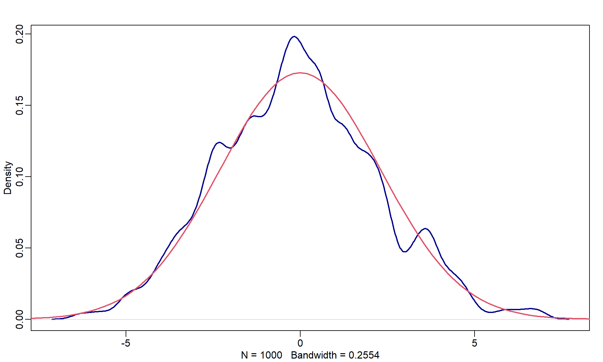
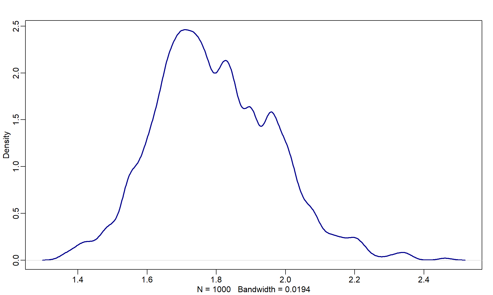
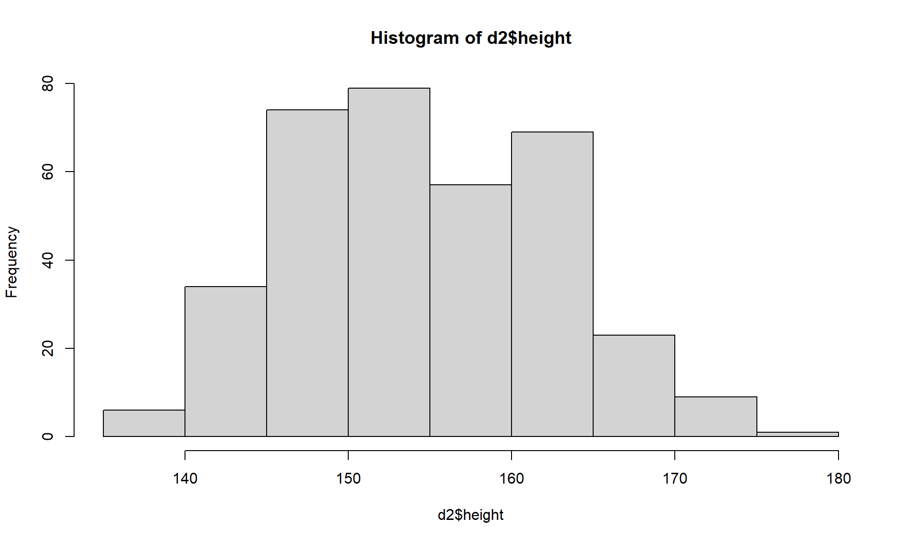
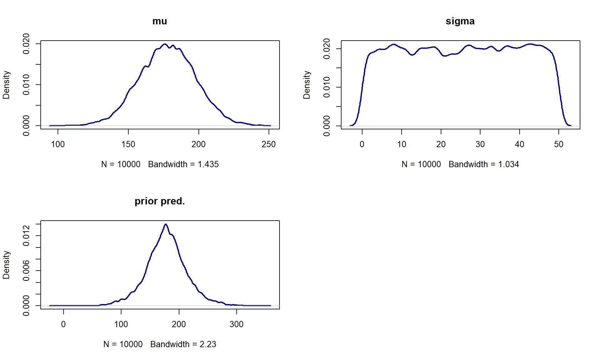
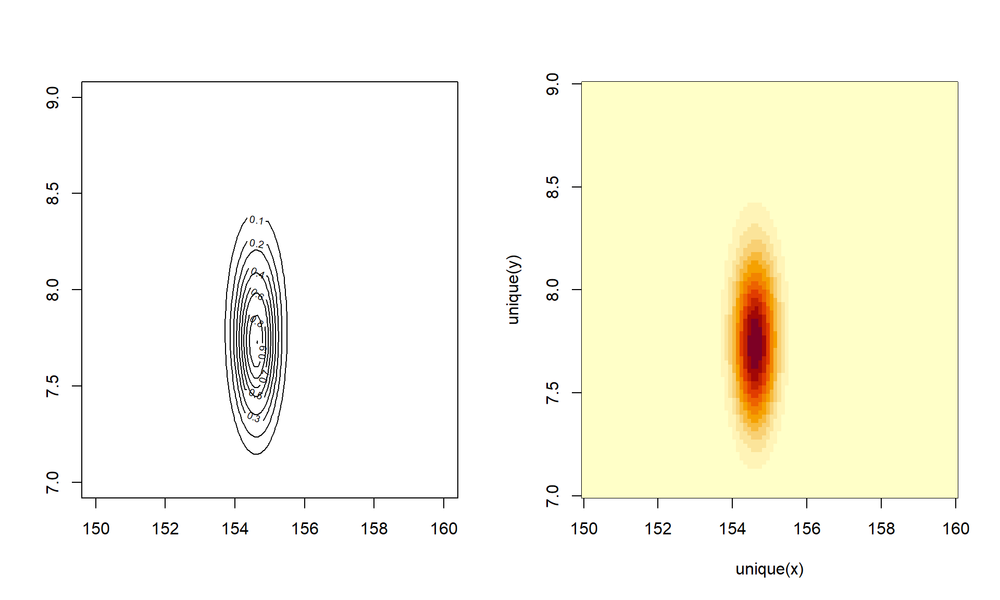
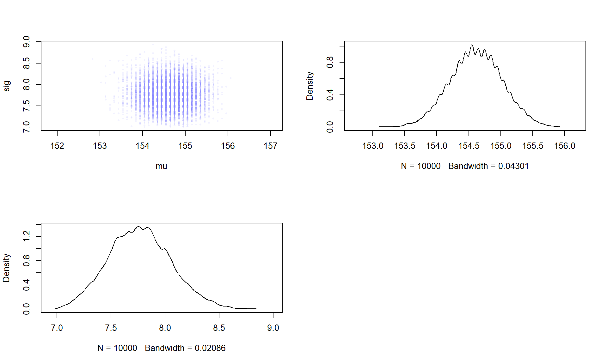
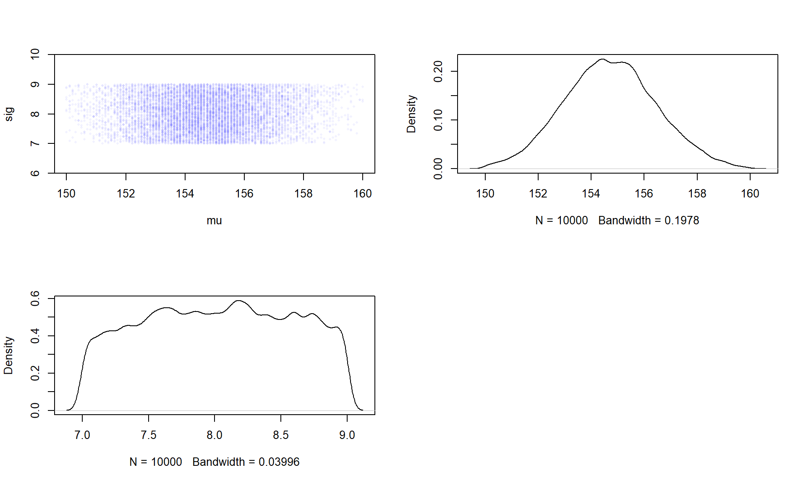

Code
library(rethinking)library(rethinking)pos <- replicate(1e3, sum(runif(16,-1,1)))
dens(pos, lwd=2, col='darkblue')
curve(dnorm(x, 0, sqrt(16*(4/12))), -10,10, add=T, col=2, lwd=2)
growth <- replicate(1e3, prod(runif(12,1,1.1)))
dens(growth, col='darkblue', lwd=2)
data(Howell1)
d <- Howell1
precis(d) mean sd 5.5% 94.5% histogram
height 138.2635963 27.6024476 81.108550 165.73500 ▁▁▁▁▁▁▁▂▁▇▇▅▁
weight 35.6106176 14.7191782 9.360721 54.50289 ▁▂▃▂▂▂▂▅▇▇▃▂▁
age 29.3443934 20.7468882 1.000000 66.13500 ▇▅▅▃▅▂▂▁▁
male 0.4724265 0.4996986 0.000000 1.00000 ▇▁▁▁▁▁▁▁▁▇d2 <- d[d$age >= 18, ]
hist(d2$height)
n <- 1e4
mu <- rnorm(n, 178, 20)
sig <- runif(n,0,50)
prior_pred <- rnorm(n,mu,sig)
par(mfrow=c(2,2))
dens(mu, lwd=2, col='darkblue', main='mu')
dens(sig, lwd=2, col='darkblue', main='sigma')
dens(prior_pred, lwd=2, col='darkblue', main='prior pred.')
par(mfrow=c(1,1))
post <- expand.grid(mu=seq(150, 160, length.out=100),
sig=seq(7, 9, length.out=100))
post$LL <- apply(post, 1, \(x) {
sum(dnorm(d2$height, x[1], x[2], log=T)) + # likelihood
dnorm(x[1], 178, 20, log=T) + dunif(x[2], 0, 50, log=T) #priors
})
# To not get a vector of all zeros (just doing exp(...)), we need to scale by the max
post$prob <- exp(post$LL - max(post$LL))
par(mfrow=c(1,2))
contour_xyz(post$mu, post$sig, post$prob)
image_xyz(post$mu, post$sig, post$prob)
par(mfrow=c(1,1))samp <- sample(nrow(post), replace=T, prob=post$prob)
par(mfrow=c(2,2))
with(post[samp,], {
plot(mu, sig, pch=16, asp=1, cex=0.5, col=col.alpha(rangi2,0.1))
dens(mu, adj=0.8)
dens(sig)
})
par(mfrow=c(1,1))
d3 <- sample(d2$height, 20)
post <- expand.grid(mu=seq(150, 160, length.out=100),
sig=seq(7, 9, length.out=100))
post$LL <- apply(post, 1, \(x) {
sum(dnorm(d3, x[1], x[2], log=T)) + # likelihood
dnorm(x[1], 178, 20, log=T) + dunif(x[2], 0, 50, log=T) #priors
})
# To not get a vector of all zeros (just doing exp(...)), we need to scale by the max
post$prob <- exp(post$LL - max(post$LL))
samp <- sample(nrow(post), replace=T, prob=post$prob)
par(mfrow=c(2,2))
with(post[samp,], {
plot(mu, sig, pch=16, asp=1, cex=0.5, col=col.alpha(rangi2,0.1))
dens(mu, adj=0.8)
dens(sig)
})
par(mfrow=c(1,1))
# `alist` does not evaluate the code inside, `list` does
flist <- alist(
height ~ dnorm(mu, sigma),
mu ~ dnorm(178, 20),
sigma ~ dunif(0, 50)
)
# can also provide starting values to start the climb at
m4.1 <- quap(flist, data=d2)
precis(m4.1) mean sd 5.5% 94.5%
mu 154.606987 0.4119939 153.94854 155.265433
sigma 7.731319 0.2913847 7.26563 8.197008vcov(m4.1) mu sigma
mu 0.1697389746 0.0002172218
sigma 0.0002172218 0.0849050298post <- extract.samples(m4.1, n=1e4)
# Same as:
post1 <- MASS::mvrnorm(n=1e4, mu=coef(m4.1), Sigma=vcov(m4.1))
head(post) mu sigma
1 154.4401 7.512484
2 154.7320 7.568433
3 154.8825 7.664807
4 154.0697 7.280697
5 154.8446 7.753576
6 154.5324 7.780535